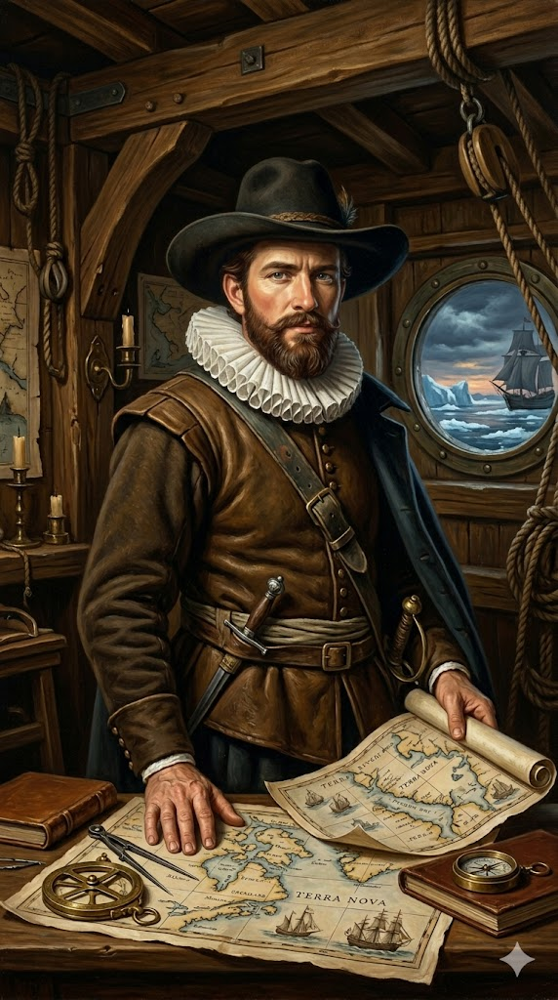

הנרי הדסון

לחץ על התמונה להגדלה
Henry Hudson | Source: Wikimedia Commons | License: Public Domain
מקור ומשמעות השם המלא (אטימולוגיה מורחבת)
שם פרטי: הנרי (Henry)
השם "הנרי" הוא שם אנגלי קלאסי ששורשיו נטועים בשם הגרמאני העתיק Haimric (היימריק).
מקור בלשני וסמלי: השם מורכב משתי מילים גרמאניות: Haim (בית, אחוזה או עולם) ו-Ric (שליט או עוצמה). משמעות השם היא אפוא "שליט הבית" או "מנהיג האחוזה". באנגליה של ימי הביניים והרנסנס, זה היה אחד השמות המלכותיים והנפוצים ביותר (שמונה מלכי אנגליה נשאו שם זה, כולל הנרי השמיני). באופן אירוני ומכמיר לב, "שליט הבית" בילה את שנותיו האחרונות בחיפוש נואש אחר בית ומקלט בלב הים הקפוא והזר, וסיים את חייו מגורש מהספינה (ביתו היחיד) על ידי אנשיו.
שם משפחה: הדסון (Hudson)
זהו שם משפחה אנגלי פטרונימי (הנגזר משמו של אב המשפחה או אב קדמון).
התפתחות השם: השם מורכב מהקידומת "Hudde" (הוד) והסיומת "son" (בנו של). "הוד" היה כינוי חיבה נפוץ בימי הביניים באנגליה לשמות כמו יו (Hugh) או ריצ'רד (Richard). השורש של השם Hugh מגיע מהמילה הגרמאנית Hug, שמשמעותה "לב", "נשמה", או "רוח". לכן, משמעות השם הדסון היא "בנו של בעל הלב/הרוח".
ההיסטוריה הגיאוגרפית הפכה את השם הזה לאחד המפורסמים בעולם: מפרץ הדסון, נהר ההדסון, מצר הדסון, מחוז הדסון, וחברת מפרץ הדסון העצומה – כולם מנציחים את הנווט האנגלי שהעניק את שמו לחלקים נרחבים ביותר במפת צפון אמריקה.
ילדות ורקע מוקדם: תעלומת השנים האבודות
בניגוד לחוקרים אחרים, ילדותו של הנרי הדסון אפופה במסתורין כמעט מוחלט. אין תיעוד מדויק לגבי שנת לידתו (המשוערת סביב 1565) או מקום הולדתו, למרות שסביר להניח שנולד באנגליה או בסביבות לונדון.
השתייכות למשפחת סוחרים ואנשי ימיה מסבירה כיצד רכש הדסון את כישוריו המתקדמים כנווט וקרטוגרף. הוא לא צמח מתוך עוני כנער סיפון פשוט (כמו פרנסיס דרייק), אלא נכנס לדפי ההיסטוריה בשנת 1607 כשהוא כבר נווט בעל שם עולמי, נשוי, ואב לילדים, שנבחר על ידי "חברת מוסקובי" להוביל משלחת אסטרטגית מורכבת.
אידאולוגיה: האובססיה למעבר אל המזרח
האידאולוגיה של הדסון לא התמקדה בכיבוש אימפריות או במלחמות דת, אלא בניסיון לפתור את האתגר המסחרי והגיאוגרפי הגדול ביותר של תקופתו.
אמונתו של הדסון: הדסון היה חדור אמונה בתיאוריה גיאוגרפית (שגויה) מאותה תקופה, שגרסה כי קרח יכול להיווצר רק בסמוך לחופי היבשה, וכי מי האוקיינוס המלוחים בקוטב הצפוני אינם קופאים. הוא האמין באמת ובתמים שאם רק יצליח לפרוץ את שכבת הקרח הראשונית, הוא ימצא ים קוטבי פתוח וחמים שיאפשר לו להפליג ישירות מעל הקוטב עד לאסיה. אובססיה זו – למצוא את "המעבר הצפון-מערבי" או ה"צפון-מזרחי" – דחפה אותו להוביל ארבע משלחות שונות אל תוך הגיהנום הקפוא של האזור הארקטי.
ארבעת המסעות: מהתהילה בסבאלברד למרד בלב קרח
המסעות הראשונים והתהילה: תעשיית הלווייתנים (1607-1608)
בשנת 1607, נשלח הדסון על ידי "חברת מוסקובי" האנגלית למצוא נתיב דרך הקוטב הצפוני לסין. הוא הרחיק צפונה יותר מכל חוקר אירופאי לפניו, עד לארכיפלג סבאלברד (Svalbard) שמצפון לנורווגיה. אף שנחסם על ידי חומות קרח עצומות, מה שהקנה להדסון את פרסומו העולמי הראשון לא היה גילוי של מעבר ימי, אלא תגלית זואולוגית-כלכלית:
הוא חזר לאנגליה עם דיווחים סנסציוניים על כך שהמים באזור שורצים במספרים בלתי נתפסים של לווייתנים וניבתנים (Walruses). דיווחים אלו הציתו באופן מיידי "בהלה לזהב" מסוג חדש: תעשיית ציד הלווייתנים הארקטית של אנגליה והולנד (שמן הלווייתנים היה מצרך יקר ערך לתאורה ולתעשייה). תגלית זו הפכה את הדסון לנווט בעל שם עולמי. ב-1608 הוא ניסה שוב, הפעם לכיוון ארכיפלג נוביה זמליה שמצפון לרוסיה, אך שוב נהדף על ידי הקרח. הציבור האנגלי התאכזב מאי-מציאת המעבר לאסיה, ו"חברת מוסקובי" הפסיקה את מימונו.
המסע השלישי: העריקה להולנד וגילוי הנהר (1609)
לאחר שהאנגלים נטשו אותו, הדסון היה אובססיבי ונואש להמשיך. בצעד שנחשב למפתיע וכמעט בגדר "עריקה", הוא פנה ליריבה המסחרית החזקה ביותר של מולדתו: חברת הודו המזרחית ההולנדית (VOC). ההולנדים קפצו על ההזדמנות להעסיק נווט כה מפורסם. הם ציידו אותו בספינה בשם Halve Maen (חצי ירח) ופקדו עליו לנסות שוב את המעבר הצפון-מזרחי דרך רוסיה.
המראת הפקודה: כשהגיע לרוסיה ופגש שוב בקרחונים, פרץ מרד זוטא בצוותו המעורב (הולנדים ואנגלים) עקב הקור הקיצוני. במקום לחזור להולנד כפי שנפקד עליו, הדסון קיבל החלטה ששינתה את פני ההיסטוריה: הוא סובב את הספינה לכיוון מערב, חצה את האוקיינוס האטלנטי, והחליט לחפש את המעבר דרך יבשת צפון אמריקה.
בספטמבר 1609, הוא גילה שפך נהר רחב ונכנס לתוכו, משוכנע שזהו המצר לאוקיינוס השקט. הוא הפליג במעלה הנהר (עד לאזור העיר אלבני של ימינו). כשהמים הפכו לרדודים, הבין שזהו נהר. גילוי נהר ההדסון על ידי נווט תחת דגל הולנדי הוא שהקנה להולנדים את הזכות המשפטית וההיסטורית לייסד את המושבה "ניו אמסטרדם" (העיר ניו יורק כיום).
המסע האחרון, החורף הקפוא והמרד (1610-1611)
ב-1610, משקיעים אנגלים (שלא רצו שהולנד תזכה שוב בתגליותיו) שלחו את הדסון במסעו האחרון על סיפון ה-Discovery לחפש את המעבר הצפון-מערבי דרך צפון קנדה. הוא עבר דרך מצר הדסון הבוגדני ונכנס לגוף מים עצום, משוכנע שהגיע לאוקיינוס השקט. למעשה, זה היה מפרץ הדסון.
החורף הטראגי: בחורף, הספינה נלכדה לחלוטין בקרח במפרץ ג'יימס. הצוות העביר חורף קשה מנשוא, בסבל מצפדינה, רעב וכפור.
המרד (Mutiny): באביב 1611, כשהקרח הפשיר, הדסון התעקש להמשיך בחקר המפרץ במקום לחזור הביתה. הצוות המורעב מרד בו. ביוני 1611, המורדים הכריחו את הדסון, יחד עם בנו הצעיר ג'ון ושבעה מלחים חולים, להיכנס לסירת משוטים פתוחה. הם ננטשו בלב ים ללא ציוד מתאים, ומעולם לא נראו שוב.
תגליות גיאוגרפיות ונתונים הידרולוגיים
1. נהר ההדסון (The Hudson River)
התיעוד המדויק של הדסון יצר את התשתית להקמת העיר ניו יורק (ניו אמסטרדם).
נתונים הידרולוגיים: נהר ההדסון אינו נהר רגיל לאורך רוב מסלולו הדרומי, אלא אסטואר (Estuary) – שפך נהר הנתון להשפעת גאות ושפל ממי האוקיינוס האטלנטי שחודרים עמוק לתוך היבשת. עומקו הממוצע באזור נמל ניו יורק נע בין 9 ל-15 מטרים, אך באזורים מסוימים, כגון אזור World's End (ליד האקדמיה הצבאית ווסט פוינט), העומק צונח באופן דרמטי לכ-62 מטרים. עומק הידרוגרפי יוצא דופן זה הוא שאפשר לספינות אוקייניות גדולות (כמו של הדסון) לחדור עשרות קילומטרים לתוך היבשת ללא חשש לעלייה על שרטון, מה שהפך אותו לעורק התחבורה האולטימטיבי לסחר הפרוות באותה תקופה.
2. מפרץ הדסון (Hudson Bay) וקנדה
גילוי המפרץ העצום, שגבה מהדסון את חייו, פתח נתיב גישה צפוני אסטרטגי אל פנים יבשת צפון אמריקה. כחמישים שנים לאחר מותו, הגילוי הוביל להקמת חברת מפרץ הדסון (Hudson's Bay Company) ב-1670, אשר שלטה בפועל על שטח עצום מהיבשת ועיצבה את גבולותיה של קנדה המודרנית.
נתונים הידרולוגיים: מפרץ הדסון איננו מפרץ רגיל, אלא למעשה ים שולי ענק של האוקיינוס הארקטי. שטחו משתרע על פני כ-1.23 מיליון קילומטרים רבועים (גדול פי 60 משטח מדינת ישראל). על אף גודלו העצום, הוא נחשב למפרץ רדוד במיוחד מבחינה יחסית: העומק הממוצע שלו הוא כ-100 מטרים בלבד, והעומק המרבי מגיע רק לכ-270 מטרים. בגלל מיקומו הצפוני והעומק הרדוד יחסית שלו, גוף המים העצום הזה קופא כמעט לחלוטין במהלך החורף הארוך, ומופשר רק בחודשי הקיץ הקצרים. תופעה אקלימית-הידרולוגית ייחודית זו היא המלכודת האכזרית שכלאה את ספינת ה-Discovery של הדסון, שיתקה את המשלחת והובילה לייאוש המוחלט, לרעב ולמרד שחיסל אותו.
מקורות וביבליוגרפיה (אימות מחקר אקדמי)
- היומנים של רוברט ג'ואט (Robert Juet): ג'ואט היה קצין בספינת ה"חצי ירח" (1609). יומניו הם המקור ההיסטורי העיקרי למפגשים עם הילידים בשפך ההדסון, וגם העדות לבריחה מהפקודות ההולנדיות לטובת חיפוש באמריקה. באורח אירוני, ג'ואט היה בין מובילי המרד במסע האחרון של 1611.
- עדותו של חבקוק פריקט (Abacuk Pricket): הניצול המרכזי מהמרד. למרות שיומנו נכתב כדי להציל אותו מגרדום בעוון מרד (Mutiny), הוא העדות היחידה לנטישתו של הדסון בסירה הפתוחה.
- "Fatal Journey" מאת Peter C. Mancall (2009): מחקר היסטורי מודרני המנתח את מעורבותו עם חברת מוסקובי, החוזה עם ה-VOC (החברה ההולנדית), ותעשיית ציד הלווייתנים הארקטית שהדסון עזר לייסד.
- NOAA (National Oceanic and Atmospheric Administration): מקור רשמי לנתונים ההידרולוגיים העכשוויים אודות העומק האסטוארי של נהר ההדסון (עד 62 מטרים) והמאפיינים הרדודים והקופאים של מפרץ הדסון.